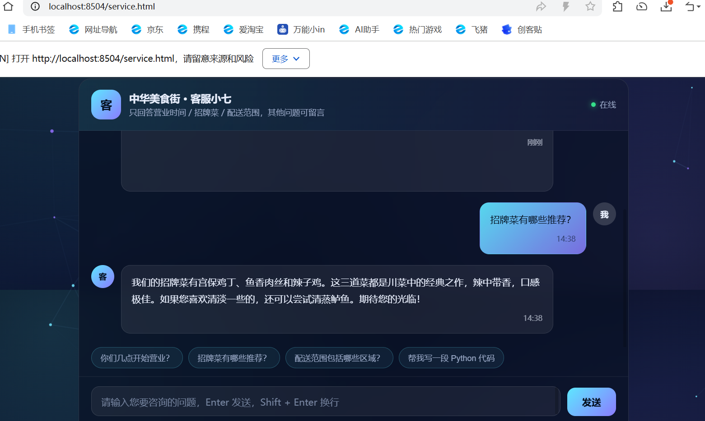
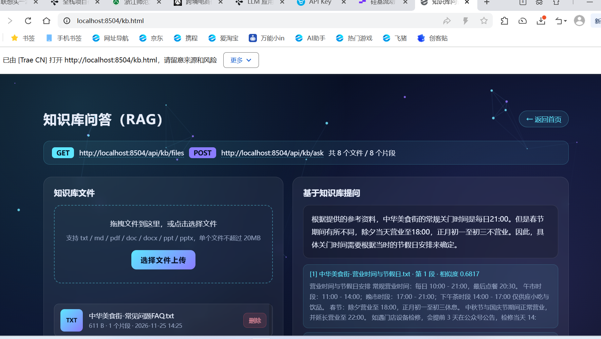
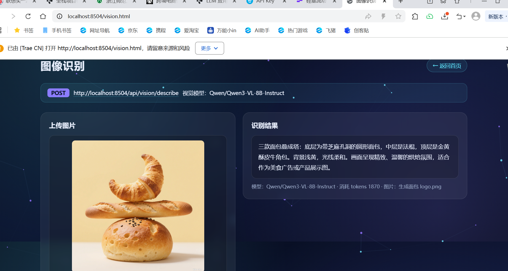
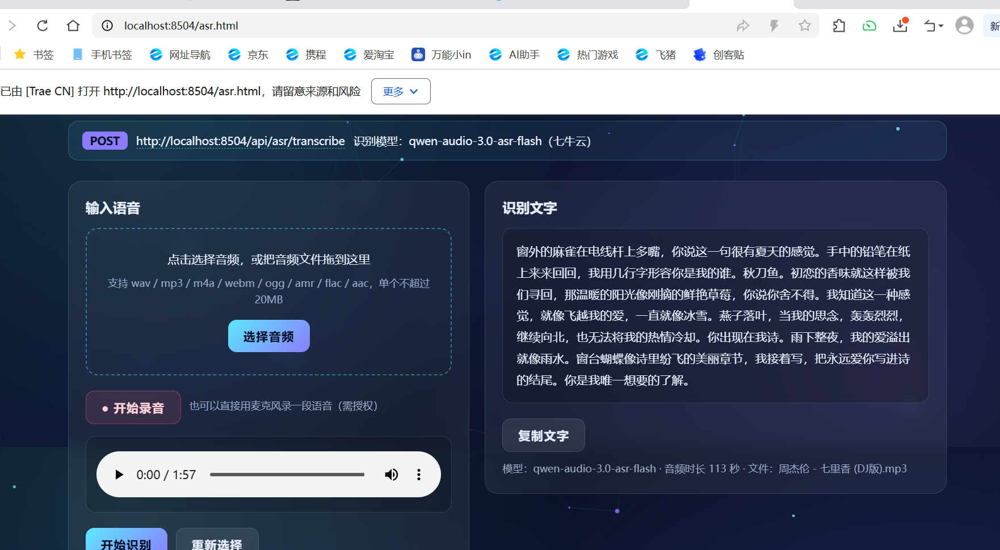

LLM 实践完成测试展示
← 返回首页大模型应用实践 · 测试验收
四项 LLM 能力已全部跑通
姓名：张乾 学号：24002120504 项目类别：自选 技术栈：Node.js + Express + MySQL + 原生前端
- 4大模型能力
- 2模型服务商
- 100%真实接口调用
01
AI 客服测试展示
限定人设的智能客服「中华美食街 · 客服小七」，只回答营业时间、招牌菜、配送范围三类问题， 其余问题礼貌拒绝并引导留言。
- 测试提问：招牌菜有哪些推荐？
- 模型回复：宫保鸡丁、鱼香肉丝、辣子鸡等川菜经典，并推荐清蒸鲈鱼
- 人设生效：工具栏展示可回答的三类问题，超范围问题会统一拒绝
- 技术要点：system 提示词约束 + 多轮上下文 + 硅基流动代理调用

02
知识库测试展示
上传文档构建专属知识库（RAG）：8 个文件切分为 8 个片段并生成 1024 维向量， 提问时先检索再交给大模型作答，答案附带引用来源与相似度。
- 知识库规模：8 个文件 / 8 个片段（docx、pptx、txt）
- 测试提问：你们几点关门？
- 模型回复：常规 21:00 关门，除夕 18:00，春节期间另作安排
- 引用片段：营业时间与节假日.txt 第 1 段，相似度 0.6817

03
图像识别测试展示
上传图片，多模态模型自动描述画面内容。测试图为一组叠放的面包， 模型准确识别出法棍、可颂与芝麻圆面包的层次关系与暖色背景。
- 测试图片：三款面包叠成塔（local 上传）
- 识别结果：底层芝麻圆面包、中层法棍、顶层金黄可颂，浅黄背景
- 使用模型：Qwen3-VL-8B-Instruct，单次消耗 1870 tokens
- 技术要点：图片转 base64 走多模态 messages，后端隐藏 Key

04
语音识别测试展示
上传音频或用麦克风录制，七牛 Qwen-Audio 模型把语音转写成文字。 测试用 1 分 57 秒的歌曲片段，逐句转写出完整歌词。
- 测试音频：七里香 (DJ版).mp3，时长 1:57
- 识别结果：完整歌词文本，可直接复制
- 使用模型：qwen-audio-3.0-asr-flash（七牛云）
- 技术要点：multipart 转发 /audio/transcriptions，前端支持录音与上传
